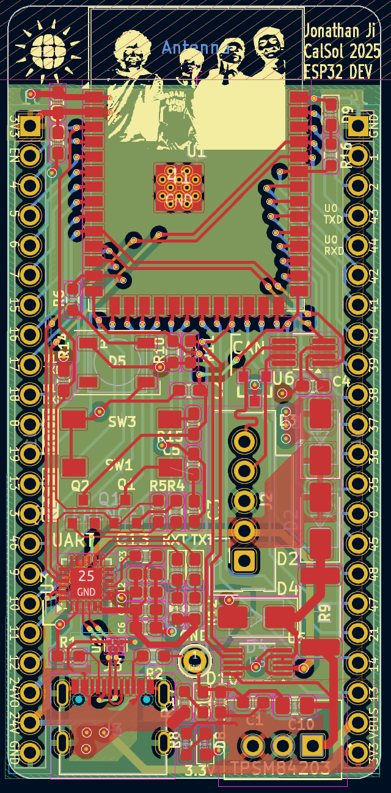
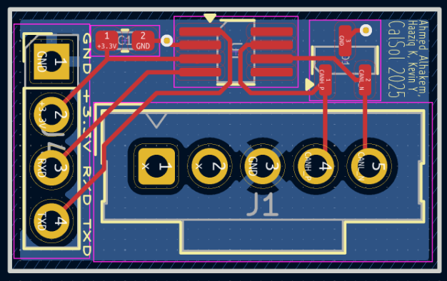
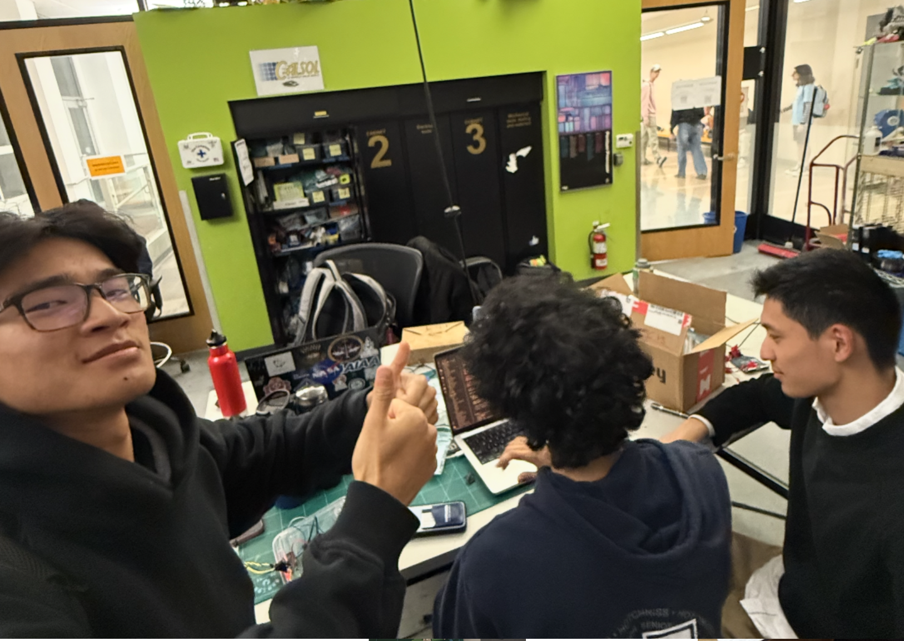

CAN Testbench
CalSol, Spring 2025
On the CAN TB team, we led the club’s switch to ESP microprocessors and designed the PCB and firmware for CAN bus communication on the ESP32.


We helped fix the ESP dev board layout from last semester, and updated to be printed by JLCPCB.
I rearranged components, vias, and added the silkscreen.

To allow other ESP32 dev boards to have CAN bus capabilities, we also designed our own transceiver module.
It was based off of the ESP32 Dev Board.


Using the transceiver, I connected two ESP32 boards to work on firmware to allow communication.
Unfortunately, I discovered that a CAN network needs termination caps to ensure stable signal, which our first prototype did not have...

To allow CAN Bus for ESP32, we chose to implement CAN Bus communication using the built-in TWAI library.
We wrote modular class-based code to help customize it to different subsystems/sensors, while allowing future developments of the firmware.
Code View
/* CalSol - UC Berkeley Solar Vehicle Team
* can_communication.h - Gen11
* Purpose: ESP32 CAN Protocol Definitions
* Author(s): Kevin Ying, Haaziq Kazi, DeepSeek 2025
* Date: 13th April 2025
*/
#ifndef CAN_COMMUNICATION_H
#define CAN_COMMUNICATION_H
#include <Arduino.h>
#include <algorithm>
#include "driver/twai.h" // ESP32 CAN (TWAI) library
#include <cstring> // for memcpy
#include "can_message.h"
#define SEND_TIMEOUT_MS 100 // ms
#define RECEIVE_TIMEOUT_MS 1000 // ms
class CANDevice {
private:
static const size_t MAX_ALLOWED_IDS = 10;
uint32_t allowedIDs[MAX_ALLOWED_IDS];
size_t numAllowedIDs;
uint32_t self_ID;
bool driver_initialized = false;
uint8_t TX;
uint8_t RX;
/* Helper function for unpacking CAN messages */
void unpackMessage(const CANMessage& msg, void* data_dest, size_t dest_len) {
if (msg.len == dest_len) {
memcpy(data_dest, msg.data, dest_len);
Serial.println("✅ Message unpacked successfully!");
} else {
Serial.println("❌ The destination data length does not match the message length.");
}
}
/* Helper function to filter allowed CAN IDs */
bool filterMessage(uint32_t id) const {
if (numAllowedIDs == 0) return true; // Accept all if no filters set
return std::binary_search(allowedIDs, allowedIDs + numAllowedIDs, id);
}
public:
// Constructor
CANDevice(uint32_t id, uint8_t tx_pin, uint8_t rx_pin,
const uint32_t* filter_IDs = nullptr, size_t num_filtered_IDs = 0) :
self_ID(id),
numAllowedIDs(std::min(num_filtered_IDs, MAX_ALLOWED_IDS))
{
if (filter_IDs && numAllowedIDs > 0) {
memcpy(allowedIDs, filter_IDs, numAllowedIDs * sizeof(uint32_t));
std::sort(allowedIDs, allowedIDs + numAllowedIDs);
}
TX = tx_pin;
RX = rx_pin;
}
bool begin() {
Serial.println("Initializing TWAI CAN bus...");
twai_general_config_t g_config = TWAI_GENERAL_CONFIG_DEFAULT(gpio_num_t(TX), gpio_num_t(RX), TWAI_MODE_NORMAL);
twai_timing_config_t t_config = TWAI_TIMING_CONFIG_500KBITS(); // 500 Kbps
twai_filter_config_t f_config = TWAI_FILTER_CONFIG_ACCEPT_ALL();
if (twai_driver_install(&g_config, &t_config, &f_config) != ESP_OK) {
Serial.println("❌ Failed to install TWAI driver");
return false;
}
if (twai_start() != ESP_OK) {
Serial.println("❌ Failed to start TWAI driver");
return false;
}
driver_initialized = true;
Serial.println("✅ TWAI driver started successfully");
return true;
}
// ... (Remainder of code remains same) ...
~CANDevice() {
end();
}
};
#endif // CAN_COMMUNICATION_H


I’ve made great friends at CalSol, including Ahmed, Haaziq, Preston, and worked with electrical subsystem lead Jonathan to achieve the club’s goals. We had a great time working on the project.
We’ve finally created a functional system that transitions the club’s new sensors and components to use the ESP32 board. This includes hardware design and firmware support.